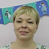

Дошкольное отделение школы № 597
В 2015 году 32% первоклассников Школы № 597 пришли из дошкольного отделения.
- улица Лавочкина, 50к2
- улица Лавочкина, 52А
Воспитатели
Воспитатели, которых чаще всего благодарят родители (отзывы и профили сотрудников взяты с официального сайта школы):|
Муз. рук.
Меркутова Елена Владимировна
11 благодарностей |
Руководитель
Годовикова Ирина Ивановна
10 благодарностей |
Корчагина Марина Сергеевна
5 благодарностей |
Воспитатель
Сидорова Ольга Федоровна
5 благодарностей |
 Физ. рук.
Афанасова Анна Сергеевна
Физ. рук.
Афанасова Анна Сергеевна
4 благодарности |
Воспитатель
Клинкова Елена Анатольевна
3 благодарности |
 Старший воспитатель
Бушкина Елена Олеговна
Старший воспитатель
Бушкина Елена Олеговна
3 благодарности |

Воспитатель
Галахова Наталья Вячеславовна
2 благодарности |
|
Воспитатель
Овсянникова Людмила Анатольевна
2 благодарности |
Воспитатель
Калабская Яна Алексеевна
1 благодарность |
Отзывы
Данные собраны c официального сайта школы и через форму для отзывов.
Хотелось бы сказать огромное спасибо нашему дорогому воспитателю Клинковой Елене Анатольевне,
Спасибо за выдержку, упорство, добродушие, благодетельность и искреннюю привязанность к деткам. Благодарим за то спокойствие, которое чувствует каждый из нас оставляя ребёнка на целый день в садике.
Ведь каждый знает, что с ним ничего не случится. А как приятно видеть улыбку и светящиеся глазки деток, когда утром они идут в садик и какими довольными возвращаются вечером домой.
Нам очень повезло, что вы есть у нас!
Долгие вам лета и признания в любимой работе!
Также спасибо второму воспитателю Колабской Яне Алексеевне!
Спасибо вам за участие в воспитании наших детей. Мы все благодарны за ваше терпение, понимание, ласку и тепло. За уютную и положительную атмосферу в группе. Сразу понятно, вы действительно любите то чем занимаетесь. Наши дети растут с пониманием, что такое дружба, хорошие поступки, доброта и любовь. Каждый день их ожидают новые развлечения и задания в которых они учатся воспринимать
окружающий мир, раскрывают таланты и полноценно развиваются. Мы с уверенностью знаем, что каждое утро отдаём детей в надёжные, добрые руки.евне
Помощнику воспитателя Елене Владимировне, она пришла недавно в нашу группу, но уже успела завоевать доверие у детей и наше тоже. Спасибо Вам что не оставили нас в трудную минуту!!!
Также выражаем свою признательность музыкальному руководителю Елене Владимировне Меркутовой, за Ваш колосальный труд, который вы вкладываете в наших детей, за утренники от которых каждый раз стоят слезы в глазах!
Инструктору по физкультуре Анне Сергеевне, за физическое воспитание наших детей, инструктора по плаванию Евгении Игоревне, за старания сделать их наших детей пловцами! Медсестре,за то что дети перестали бояться прививок, Пjворам за вкусное и полезное питание!!!!
И конечно же спасибо заведующей детского сада, Годовиковой Ирине Ивановне, за ее труд, за то, что она собрала профессиональный коллектив, который работает на благо наших детей! Всем Вам низкий поклон!!! И еще раз спасибо!
Спасибо за выдержку, упорство, добродушие, благодетельность и искреннюю привязанность к деткам. Благодарим за то спокойствие, которое чувствует каждый из нас оставляя ребёнка на целый день в садике.
Ведь каждый знает, что с ним ничего не случится. А как приятно видеть улыбку и светящиеся глазки деток, когда утром они идут в садик и какими довольными возвращаются вечером домой.
Нам очень повезло, что вы есть у нас!
Долгие вам лета и признания в любимой работе!
Также спасибо второму воспитателю Колабской Яне Алексеевне!
Спасибо вам за участие в воспитании наших детей. Мы все благодарны за ваше терпение, понимание, ласку и тепло. За уютную и положительную атмосферу в группе. Сразу понятно, вы действительно любите то чем занимаетесь. Наши дети растут с пониманием, что такое дружба, хорошие поступки, доброта и любовь. Каждый день их ожидают новые развлечения и задания в которых они учатся воспринимать
окружающий мир, раскрывают таланты и полноценно развиваются. Мы с уверенностью знаем, что каждое утро отдаём детей в надёжные, добрые руки.евне
Помощнику воспитателя Елене Владимировне, она пришла недавно в нашу группу, но уже успела завоевать доверие у детей и наше тоже. Спасибо Вам что не оставили нас в трудную минуту!!!
Также выражаем свою признательность музыкальному руководителю Елене Владимировне Меркутовой, за Ваш колосальный труд, который вы вкладываете в наших детей, за утренники от которых каждый раз стоят слезы в глазах!
Инструктору по физкультуре Анне Сергеевне, за физическое воспитание наших детей, инструктора по плаванию Евгении Игоревне, за старания сделать их наших детей пловцами! Медсестре,за то что дети перестали бояться прививок, Пjворам за вкусное и полезное питание!!!!
И конечно же спасибо заведующей детского сада, Годовиковой Ирине Ивановне, за ее труд, за то, что она собрала профессиональный коллектив, который работает на благо наших детей! Всем Вам низкий поклон!!! И еще раз спасибо!
С глубоким чувством благодарности от родителей и выпускников группы №3 СПДУ №1 хочется сказать теплые слова в адрес бессменного воспитателя Сидоровой Ольги Фёдоровны за её любовь к нашим детям, за Воспитание юной поросли в духе любви к родителям и своей стране! Чувство ответственности и дисциплина, первые навыки к труду и необходимость помощи ближнему, - всё это с заботой и профессионализмом удалось раскрыть в детях нашему дорогому воспитателю!
Также хочется поблагодарить директора детсада Годовикову Ирину Викторовну за ее готовность идти в огонь и воду во благо самого дорогого, что есть у каждого человека - его ребенка, а значит и среды его воспитания - детского сада. И труды всего персонала СПДУ №1 не проходят даром. Ведь многое, что сделано быстро, но плохо забывается, а то, что строится медленно и хорошо - запоминается на всю жизнь. Именно эта неспешная и, на первый взгляд, незаметная работа дает те благодатные плоды, которые произрастают в наших детях спустя годы. Спасибо вам за то, что вы именно такие, за то, что вы пришли отдать себя детям не на год-два, а на всю жизнь! Ведь именно тогда человек и начинает вкладывать свою душу в работу - в наших детей, когда он становится частью этой великой тайны детского мира!
Родители выпускников группы №3 отдельного десантного батальона по защите счастливого детства СПБУ №1
Также хочется поблагодарить директора детсада Годовикову Ирину Викторовну за ее готовность идти в огонь и воду во благо самого дорогого, что есть у каждого человека - его ребенка, а значит и среды его воспитания - детского сада. И труды всего персонала СПДУ №1 не проходят даром. Ведь многое, что сделано быстро, но плохо забывается, а то, что строится медленно и хорошо - запоминается на всю жизнь. Именно эта неспешная и, на первый взгляд, незаметная работа дает те благодатные плоды, которые произрастают в наших детях спустя годы. Спасибо вам за то, что вы именно такие, за то, что вы пришли отдать себя детям не на год-два, а на всю жизнь! Ведь именно тогда человек и начинает вкладывать свою душу в работу - в наших детей, когда он становится частью этой великой тайны детского мира!
Родители выпускников группы №3 отдельного десантного батальона по защите счастливого детства СПБУ №1
Хочу поблагодарить старшего воспитателя Елену Олеговну за индивидуальный подход ко всем без исключения детям. Спасибо Вам за помощь с адаптацией ребенка к саду. У нас адаптация проходила очень тяжело и благодаря Вам успешно закончилась. К Вам ребенок относится особенно - как к родному человеку, с уважением и почтением. И я понимаю почему. Вы отличный педагог, профессионал своего дела, тонкий психолог и замечательный человек, добрый и отзывчивый.
Также хочется поблагодарить Елену Владимировну! Я не понимаю, как вообще возможно за 3 месяца выучить с детьми танцевальную программу продолжительностью в 30 минут. Вы уникальный педагог! В вас столько энергии, вдохновения, теплоты и творчества, что дети просто не могут удержаться от танцев и песен.
Огромное спасибо Анне Сергеевне за интересные, разнообразные и необычные задания для наших малышей. Так сложно таких маленьких детей научить гимнастике, разминке и выполнению различных упражнений без суеты и беготни. У Вас это отлично получается!
Также хочется поблагодарить Елену Владимировну! Я не понимаю, как вообще возможно за 3 месяца выучить с детьми танцевальную программу продолжительностью в 30 минут. Вы уникальный педагог! В вас столько энергии, вдохновения, теплоты и творчества, что дети просто не могут удержаться от танцев и песен.
Огромное спасибо Анне Сергеевне за интересные, разнообразные и необычные задания для наших малышей. Так сложно таких маленьких детей научить гимнастике, разминке и выполнению различных упражнений без суеты и беготни. У Вас это отлично получается!
Мы, родители подготовительной группы №2, хотим сказать большое спасибо всем тем, кто эти годы вкладывал душу в наших детей: воспитателю ясельной группы Елене Анатольевне Клинковой, музыкальному руководителю Елене Владимировне Меркутовой, Марине Сергеевне Корчагиной – педагогу по народоведению, Евгении Игоревне Сабаненко инструктору по плаванию, Анне Сергеевне Афанасовой инструктору по физической культуре, Лане Тамазиевне Кирия, нашей любимой помощнице воспитателя, старшему воспитателю Елене Олеговне Бушкиной, Почетному работнику общего образования, Заслуженному учителю РФ, депутату муниципального собрания района «Ховрино», руководителю нашего СПДО №1 Ирине Ивановне Годовиковой. Отдельное «БОЛЬШОЕ СПАСИБО» нашему воспитателю Мамедовой Земфире Гумбатовне.
Все работники нашего детского сада представляют собой единый творческий организм, пронизанный любовью к детям. Это чувствуется сразу как только переступаешь порог здания сада. Нас всегда встречают улыбкой и мы оставляем своих детей в саду со спокойным сердцем.
Особо хочется выделить работу руководителя нашего СПДО №1 Ирины Ивановны Годовиковой, под мудрым руководством которой и стали возможны такие яркие проявления неординарных талантов как педагогов, так и родительского коллектива. Ведь каждому известно, что любой драгоценный камень прекрасен и сверкает по своему, но только лишь собранные в единую композицию они составляют уникальный ансамбль и настоящее произведение искусства. Также и работа руководителя требует внимательного и трепетного отношения к каждому сотруднику, при этом оставаясь достаточно строгим и требовательным к исполнению обязанностей. Именно таким руководителем и является, на наш взгляд, Ирина Ивановна.
Огромную благодарность выражаем музыкальному руководителю Елене Владимировне Меркутовой. К каждому празднику она подбирает уникальный материал, раскрывая таланты наших детей. Причем это очень серьезные произведения классической музыки и танца, сформированные в концертные программы, которые смотрятся с легкостью и наслаждением, но понятно, что за этой кажущейся легкостью стоит огромный труд всего творческого коллектива и высочайший профессионализм.
На занятиях у педагога по народоведению Корчагиной Марины Сергеевны дети приобщаются к истокам нашей культуры в самых наилучших образцах. Участвуют в народных праздниках, делают народные игрушки и интересно проводят время. Красивая, умная, задорная, обаятельная Марина Сергеевна стала эталоном для подражания для наших девочек. Все они хотят поступить в музыкальную школу и играть на балалайке.
Мы, родители группы № 2 очень довольны, что в нашем детском саду работает инструктор по плаванию Сабаненко Евгения Игоревна, очень добрый и отзывчивый человек, профессионал своего дела. Для неё все дети, как свои. К каждому ребенку знает подход. Она организовывает и проводит интересные спортивные праздники досуги, в которых участвуют дети. От таких мероприятий получаешь эмоциональный заряд, огромное удовлетворение. Дети очень любят плавание. Каждый раз их ждёт что-то новое, интересное. Мы очень благодарны ей за её труд.
Хочется сказать большое человеческое спасибо… И выразить глубокое уважение к нашему физкультурному работнику Афанасовой Анне Сергеевне. Она всегда улыбчивая, внимательная, справедливая. Редко сейчас встретишь таких людей! Дети её любят и тянутся к ней. Это прекрасно, когда дети занимаются физкультурой. Это здоровье и хорошее настроение.
Все, без исключения, представители коллектива работников нашего сада, заслуживают отдельных слов благодарности и внимания. Замечательно готовят повара, аромат свежевыпеченных булочек дети долго еще вспоминают, необыкновенным вниманием и профессионализмом, а также просто человечностью и обаянием удивляет наша медсестра Лицова Наталья Геннадиевна.
Мы, родители, очень благодарны помощнику воспитателя Кирия Лане Тамазиевне – «правая рука». Всегда спокойна и рассудительна, аккуратна и заботлива, готовая выслушать и помочь. Благодаря ей у нас в группе идеальная чистота и порядок, комфорт и уют. Дети сыты и опрятны.
И особенно теплые слова хочется сказать воспитателю Мамедовой Земфире Гумбатовне - она наделена настоящим талантом любить, понимать и всегда быть терпеливой к детям и, что особенно важно, так и к их родителям.
Наш воспитатель проводит с детьми очень интересные занятия, стараясь занять их различными видами деятельности и в совокупности обеспечить ребенку нужный разнообразный личностный рост. Наши детки с радостью показывают нам свои поделки, с интересом дома повторяют сделанное. Шаг за шагом, под чутким руководством этого воспитателя наши дети познают окружающий мир, радость дружбы, творчества, самостоятельной деятельности, познают свои личные возможности. Спасибо Вам за это.
Особенно актуальна сейчас тенденция работы по принципу: педагог - воспитанник - родитель. Но для нашего сада это совсем не новое направление, а постоянная и давняя составляющая ежедневной работы. Чего стоят только ежегодные выставки семейных произведений к каждому празднику. Эти экспозиции всегда оригинальны и не устаешь поражаться талантам детей и родителей.
Еще раз хотим отметить высокий профессионализм, чуткое отношение к детям, заботу, внимание, индивидуальный подход к каждой семье, доброту и теплоту. Воспитательный процесс организован таким образом, что учитываются все мелочи повседневной жизни в социуме, в семье, в коллективе. Дети с радостью идут в сад, потому что там их встретят любимый воспитатель и помощница воспитателя, с которыми им легко, интересно и можно поделиться своими детскими секретами. В группе царит комфортная теплая обстановка, благодаря пониманию и равноправию.
Земфира Гумбатовна и Лана Тамазиевна стремятся сделать из наших детей полноценных личностей, активных участников детского коллектива, учат быть честными, добрыми, открытыми и заботливыми. Они учат дружить и уважать друг друга, творить и фантазировать, ценить прекрасное, любить свою семью и свою Землю. Все это благодаря профессионализму и опыту, приобретенному за многие годы работы с детьми. Знание психологии ребенка, постоянное саморазвитие в профессиональной сфере просто незаменимы в профессии связанной с воспитанием детей.
Низкий поклон всем работникам нашего детского сада и пожелания дальнейших творческих успехов в нелегком труде воспитания подрастающего поколения детей. Наши дети приобретают тот ценный базис, на котором будет строиться крепкая и качественная надстройка, потому что в детстве закладываются те самые основы личности которое и составляют здоровое во всех смыслах поколение наследующее нашу страну. И потому как работает коллектив ГБОУ «Школа № 597 «Новое поколение» СПДО № 1 за будущее России мы можем быть спокойны.
Мы очень им благодарны и говорим: «СПАСИБО! НАМ ОЧЕНЬ С ВАМИ ПОВЕЗЛО!»
Мы со слезами уходим из садика
Родители подготовительной к школе группы.
25 мая 2016 года
Вложенный файл
Все работники нашего детского сада представляют собой единый творческий организм, пронизанный любовью к детям. Это чувствуется сразу как только переступаешь порог здания сада. Нас всегда встречают улыбкой и мы оставляем своих детей в саду со спокойным сердцем.
Особо хочется выделить работу руководителя нашего СПДО №1 Ирины Ивановны Годовиковой, под мудрым руководством которой и стали возможны такие яркие проявления неординарных талантов как педагогов, так и родительского коллектива. Ведь каждому известно, что любой драгоценный камень прекрасен и сверкает по своему, но только лишь собранные в единую композицию они составляют уникальный ансамбль и настоящее произведение искусства. Также и работа руководителя требует внимательного и трепетного отношения к каждому сотруднику, при этом оставаясь достаточно строгим и требовательным к исполнению обязанностей. Именно таким руководителем и является, на наш взгляд, Ирина Ивановна.
Огромную благодарность выражаем музыкальному руководителю Елене Владимировне Меркутовой. К каждому празднику она подбирает уникальный материал, раскрывая таланты наших детей. Причем это очень серьезные произведения классической музыки и танца, сформированные в концертные программы, которые смотрятся с легкостью и наслаждением, но понятно, что за этой кажущейся легкостью стоит огромный труд всего творческого коллектива и высочайший профессионализм.
На занятиях у педагога по народоведению Корчагиной Марины Сергеевны дети приобщаются к истокам нашей культуры в самых наилучших образцах. Участвуют в народных праздниках, делают народные игрушки и интересно проводят время. Красивая, умная, задорная, обаятельная Марина Сергеевна стала эталоном для подражания для наших девочек. Все они хотят поступить в музыкальную школу и играть на балалайке.
Мы, родители группы № 2 очень довольны, что в нашем детском саду работает инструктор по плаванию Сабаненко Евгения Игоревна, очень добрый и отзывчивый человек, профессионал своего дела. Для неё все дети, как свои. К каждому ребенку знает подход. Она организовывает и проводит интересные спортивные праздники досуги, в которых участвуют дети. От таких мероприятий получаешь эмоциональный заряд, огромное удовлетворение. Дети очень любят плавание. Каждый раз их ждёт что-то новое, интересное. Мы очень благодарны ей за её труд.
Хочется сказать большое человеческое спасибо… И выразить глубокое уважение к нашему физкультурному работнику Афанасовой Анне Сергеевне. Она всегда улыбчивая, внимательная, справедливая. Редко сейчас встретишь таких людей! Дети её любят и тянутся к ней. Это прекрасно, когда дети занимаются физкультурой. Это здоровье и хорошее настроение.
Все, без исключения, представители коллектива работников нашего сада, заслуживают отдельных слов благодарности и внимания. Замечательно готовят повара, аромат свежевыпеченных булочек дети долго еще вспоминают, необыкновенным вниманием и профессионализмом, а также просто человечностью и обаянием удивляет наша медсестра Лицова Наталья Геннадиевна.
Мы, родители, очень благодарны помощнику воспитателя Кирия Лане Тамазиевне – «правая рука». Всегда спокойна и рассудительна, аккуратна и заботлива, готовая выслушать и помочь. Благодаря ей у нас в группе идеальная чистота и порядок, комфорт и уют. Дети сыты и опрятны.
И особенно теплые слова хочется сказать воспитателю Мамедовой Земфире Гумбатовне - она наделена настоящим талантом любить, понимать и всегда быть терпеливой к детям и, что особенно важно, так и к их родителям.
Наш воспитатель проводит с детьми очень интересные занятия, стараясь занять их различными видами деятельности и в совокупности обеспечить ребенку нужный разнообразный личностный рост. Наши детки с радостью показывают нам свои поделки, с интересом дома повторяют сделанное. Шаг за шагом, под чутким руководством этого воспитателя наши дети познают окружающий мир, радость дружбы, творчества, самостоятельной деятельности, познают свои личные возможности. Спасибо Вам за это.
Особенно актуальна сейчас тенденция работы по принципу: педагог - воспитанник - родитель. Но для нашего сада это совсем не новое направление, а постоянная и давняя составляющая ежедневной работы. Чего стоят только ежегодные выставки семейных произведений к каждому празднику. Эти экспозиции всегда оригинальны и не устаешь поражаться талантам детей и родителей.
Еще раз хотим отметить высокий профессионализм, чуткое отношение к детям, заботу, внимание, индивидуальный подход к каждой семье, доброту и теплоту. Воспитательный процесс организован таким образом, что учитываются все мелочи повседневной жизни в социуме, в семье, в коллективе. Дети с радостью идут в сад, потому что там их встретят любимый воспитатель и помощница воспитателя, с которыми им легко, интересно и можно поделиться своими детскими секретами. В группе царит комфортная теплая обстановка, благодаря пониманию и равноправию.
Земфира Гумбатовна и Лана Тамазиевна стремятся сделать из наших детей полноценных личностей, активных участников детского коллектива, учат быть честными, добрыми, открытыми и заботливыми. Они учат дружить и уважать друг друга, творить и фантазировать, ценить прекрасное, любить свою семью и свою Землю. Все это благодаря профессионализму и опыту, приобретенному за многие годы работы с детьми. Знание психологии ребенка, постоянное саморазвитие в профессиональной сфере просто незаменимы в профессии связанной с воспитанием детей.
Низкий поклон всем работникам нашего детского сада и пожелания дальнейших творческих успехов в нелегком труде воспитания подрастающего поколения детей. Наши дети приобретают тот ценный базис, на котором будет строиться крепкая и качественная надстройка, потому что в детстве закладываются те самые основы личности которое и составляют здоровое во всех смыслах поколение наследующее нашу страну. И потому как работает коллектив ГБОУ «Школа № 597 «Новое поколение» СПДО № 1 за будущее России мы можем быть спокойны.
Мы очень им благодарны и говорим: «СПАСИБО! НАМ ОЧЕНЬ С ВАМИ ПОВЕЗЛО!»
Мы со слезами уходим из садика
Родители подготовительной к школе группы.
25 мая 2016 года
Вложенный файл
От лица всех родителей хотим поблагодарить воспитателей и помощника воспитателя группы кратковременного пребывания за колоссальную работу. В группе сложилась очень приятная атмосфера для наших детей. Благодаря вашим стараниям, профессионализму и доброжелательности наши малыши с огромным удовольствием посещали сад. Стоит ли говорить, что детей уводили домой буквально силой!
Мы выражаем вам огромнкую благодарность за тот неоценимый вклад в развитие наших малышей, который вы сделали.
Отдельно поблагодарим Елену Олеговну за индивидуальный подход к каждому ребенку, нескончаемую энергию и теплоту. Восхищает Ваш опыт, знания, безграничное терпение и мудрость в общении как с малышами, так и с их родителями.
Огромное спасибо Надежде Михайловне за очень трепетное, душевное, заботливое и внимательное отношение к детям. Вы стали нашей общей родной бабушкой! Спасибо Вам!
Наталья Вячеславовна, работа с детьми - это Ваше призвание. Приятно когда с детьми работает человек с большой душой, который искренне любит и чувствует детей. Им с Вами очень спокойно, мирно и хорошо. Вы буквально заражаете детей добротой и душевностью.
Наталья Васильевна - Вы наша Мэри Поппинс! Как хорошо, когда дети видят перед собой пример настоящей женщины, которая всегда прекрасно выглядит, умеет четко расставить границы и является сильным педагогом. С Вами дети всегда дисциплинированны, и с удовольствием выполняют задания, упражнения, учат стихи и песни.
Ирина Ивановна! Низкий поклон Вам за то, что не жалеете ни сил, ни времени на работу в детском саду! Являясь первоклассным профессионалом, Вы окружили себя такими же воспитателями. Вам не только удаётся удерживать на высоком уровне "планку", но и постоянно достигать всё новых и новых высот. Приятно, когда в саду есть настоящая хозяйка, которая создала вокруг себя теплоту и уют, помня о каждом своём ребёнке.
Мы выражаем вам огромнкую благодарность за тот неоценимый вклад в развитие наших малышей, который вы сделали.
Отдельно поблагодарим Елену Олеговну за индивидуальный подход к каждому ребенку, нескончаемую энергию и теплоту. Восхищает Ваш опыт, знания, безграничное терпение и мудрость в общении как с малышами, так и с их родителями.
Огромное спасибо Надежде Михайловне за очень трепетное, душевное, заботливое и внимательное отношение к детям. Вы стали нашей общей родной бабушкой! Спасибо Вам!
Наталья Вячеславовна, работа с детьми - это Ваше призвание. Приятно когда с детьми работает человек с большой душой, который искренне любит и чувствует детей. Им с Вами очень спокойно, мирно и хорошо. Вы буквально заражаете детей добротой и душевностью.
Наталья Васильевна - Вы наша Мэри Поппинс! Как хорошо, когда дети видят перед собой пример настоящей женщины, которая всегда прекрасно выглядит, умеет четко расставить границы и является сильным педагогом. С Вами дети всегда дисциплинированны, и с удовольствием выполняют задания, упражнения, учат стихи и песни.
Ирина Ивановна! Низкий поклон Вам за то, что не жалеете ни сил, ни времени на работу в детском саду! Являясь первоклассным профессионалом, Вы окружили себя такими же воспитателями. Вам не только удаётся удерживать на высоком уровне "планку", но и постоянно достигать всё новых и новых высот. Приятно, когда в саду есть настоящая хозяйка, которая создала вокруг себя теплоту и уют, помня о каждом своём ребёнке.
Родители выпускной группы 6 ГБОУ СОШ 597 СПДО 1 выражаютглубочайшую искреннюю благодарность коллективу ГБОУ СОШ 597 СПДО 1.
Под руководством заведующей Годовиковой Ирины Ивановны коллектив детского сада представляет собой сполоченный единый организм, пронизанный любовью к детям, добротой, теплотой, пониманием,в саду царит атмосфера уюта, присутствия яркого творческого начала, что небходимо для полноценного развития ребенка.Выражаем искреннюю благодарность воспитателям нашей группы - Людмиле Анатольевне и Татьяне Дмитриевне - профессионам с большой буквы.
Спасибо Вам за Ваш нелегкий труд, за то, что Вы без остатка отдавали себя, свое тепло нашим детям, за Вашу энергию, бескорыстную любовь и трогательную заботу.
Также глубокую благодарность выражаем музыкальному руководителю - Елене Владимировне за музыкальное воспитание наших детей. Елена Владимировна - это человек с тонким чувством прекрасного. Ее энергичность, богатый творческий потенциал способствуют созданию условий для развития творческих и музыкальных способностей наших детей.
Отдельное спасибо за формирование интереса у детей к театру, пению, танцам, музыке.
Благодарим весь персонал детского сада! Очень надеемся, что наградой за Ваш самоотверженный труд будут умные, воспитанные, духовно богатые личности, в развитие которых вы заложили фундамент. Спасибо Вам.
Под руководством заведующей Годовиковой Ирины Ивановны коллектив детского сада представляет собой сполоченный единый организм, пронизанный любовью к детям, добротой, теплотой, пониманием,в саду царит атмосфера уюта, присутствия яркого творческого начала, что небходимо для полноценного развития ребенка.Выражаем искреннюю благодарность воспитателям нашей группы - Людмиле Анатольевне и Татьяне Дмитриевне - профессионам с большой буквы.
Спасибо Вам за Ваш нелегкий труд, за то, что Вы без остатка отдавали себя, свое тепло нашим детям, за Вашу энергию, бескорыстную любовь и трогательную заботу.
Также глубокую благодарность выражаем музыкальному руководителю - Елене Владимировне за музыкальное воспитание наших детей. Елена Владимировна - это человек с тонким чувством прекрасного. Ее энергичность, богатый творческий потенциал способствуют созданию условий для развития творческих и музыкальных способностей наших детей.
Отдельное спасибо за формирование интереса у детей к театру, пению, танцам, музыке.
Благодарим весь персонал детского сада! Очень надеемся, что наградой за Ваш самоотверженный труд будут умные, воспитанные, духовно богатые личности, в развитие которых вы заложили фундамент. Спасибо Вам.
С большим удовольствием и искренностью я, как родитель сыновей, двух воспитанников младшей группы № 5 и средней группы № 3 СПДО №1 ГБОУ СОШ №597 г. Москвы, хочу выразить благодарность за нелегкий уникальный труд, преданность профессии, заботу и ту атмосферу, которую смогли создать и, главное, сохранить в нашем дошкольном учреждении руководитель Годовикова Ирина Ивановна и все нами любимые педагоги, и работники.
Я с уверенностью могу сказать ,что это лучший детский сад, это действительно второй дом для наших малышей, сказочный городок! Каждое утро, приводя ребенка в сад, любуешься ухоженной территорией, деревьями с широкой кроной и красивыми листьями, аккуратно посаженными цветами, фигурками персонажей из сказок, красочными детскими площадками с множеством игрушек! А волшебная обстановка, тепло и уют, которые царят в стенах детского сада, просто не могут ни радовать глаз! Мы посещаем сад второй год и с большой любовью и рвением бежим сюда каждое утро!
Отдельное спасибо Ирине Ивановне за наших педагогов! Мы очень любим и ценим дорогих воспитателей Сидорову Ольгу Федоровну, Клинкову Елену Анатольевну, Алямшину Ольгу Владимировну, Калабскую Яну Алексеевну, младших воспитателей Анну Викторовну и Надежду Михайловну. Мы Вас никуда не отпустим и ни на кого не променяем!!! Вы стали для моих сыновей по-настоящему хорошими друзьями!
Хочу отметить, что в нашем дошкольном учреждении особое внимание уделяется именно всестороннему развитию ребенка: не только общему воспитанию, получению знаний для подготовки к школе, но и овладению культурными средствами поведения и приобщению детей к истокам русской народной культуры и искусству. В детском саду часто проводятся различные театральные представления, праздники и другие интересные мероприятия, которые, конечно же, всегда посещаем.
Наша семья максимально старается принимать участие в жизни сада, в проводимых конкурсах и детских праздниках! Мы всегда рады и готовы помочь, создать такую благоприятную дружественную атмосферу, в которой будет легко и приятно нашим детям и воспитателям!
Я с уверенностью могу сказать ,что это лучший детский сад, это действительно второй дом для наших малышей, сказочный городок! Каждое утро, приводя ребенка в сад, любуешься ухоженной территорией, деревьями с широкой кроной и красивыми листьями, аккуратно посаженными цветами, фигурками персонажей из сказок, красочными детскими площадками с множеством игрушек! А волшебная обстановка, тепло и уют, которые царят в стенах детского сада, просто не могут ни радовать глаз! Мы посещаем сад второй год и с большой любовью и рвением бежим сюда каждое утро!
Отдельное спасибо Ирине Ивановне за наших педагогов! Мы очень любим и ценим дорогих воспитателей Сидорову Ольгу Федоровну, Клинкову Елену Анатольевну, Алямшину Ольгу Владимировну, Калабскую Яну Алексеевну, младших воспитателей Анну Викторовну и Надежду Михайловну. Мы Вас никуда не отпустим и ни на кого не променяем!!! Вы стали для моих сыновей по-настоящему хорошими друзьями!
Хочу отметить, что в нашем дошкольном учреждении особое внимание уделяется именно всестороннему развитию ребенка: не только общему воспитанию, получению знаний для подготовки к школе, но и овладению культурными средствами поведения и приобщению детей к истокам русской народной культуры и искусству. В детском саду часто проводятся различные театральные представления, праздники и другие интересные мероприятия, которые, конечно же, всегда посещаем.
Наша семья максимально старается принимать участие в жизни сада, в проводимых конкурсах и детских праздниках! Мы всегда рады и готовы помочь, создать такую благоприятную дружественную атмосферу, в которой будет легко и приятно нашим детям и воспитателям!
Если вы нашли ошибку или неточность, пожалуйста, сообщите нам об этом.
Ученик, выпускник или родитель? Оставьте отзыв о детском саде.